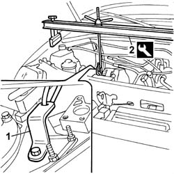
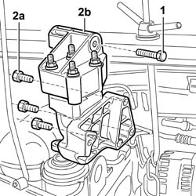
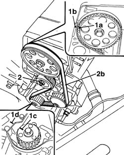
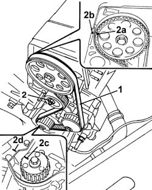
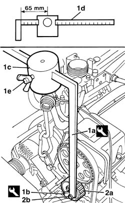

1032B14 TOOTHED TIMING BELT - R + R FOR TIMING ADJUSTMENT OR REPLACEMENT VERSIONS WITH AIR CONDITIONING
- Path
- Procedures > 10 ENGINE > 1032 TIMING SYSTEM > 1032B BELT TIMING SYSTEM > 1032B14 TOOTHED TIMING BELT - R + R FOR TIMING ADJUSTMENT OR REPLACEMENT VERSIONS WITH AIR CONDITIONING
- Kind
- repair procedure (removal / refitting; the operation number is the code)
- Applies to
- engines: 1.2 8v; all production periods
- Interactive page
- https://sloeber94.github.io/elrnDB-fDbl/en/#/223000121
Applies to: engines: 1.2 8v; all production periods
 Removing
Removing
 Refitting
RefittingPosition the vehicle on a lift.
Op. 1048A10 AIR FILTER ASSEMBLY - R.R.
Op. 1032D12 TIMING SYSTEM PROTECTIVE COVER(S) - R + R
Op. 4450B04 RIGHT FRONT WHEEL - R.R.
Op. 7055B54 PROTECTION/GUARD UNDER ENGINE - R.R.
Op. 1092B68 BELT FROM A/C COMPRESSOR TO ALTERNATOR DRIVE - R + R
Op. 1092C11 POWER STEERING PUMP DRIVE BELT - R.R. FOR VERSIONS WITH AIR CONDITIONER
Op. 1092D10 AIR CONDITIONER COMPRESSOR DRIVE BELT - R + R
Op. 1092A12 CRANKSHAFT PULLEY - R+R FOR VERSIONS WITH AIR CONDITIONING
Lower the lift.
1. Position a bracket to anchor the engine.
2. Fit the engine mounting beam and anchor a hook to the bracket positioned previously.
Description | Code | |
|---|---|---|
2 | Crossmember | 1.870.595.000 |

Applies to: engines: 1.2 8v; all production periods
1. Unscrew the timing block central bolt.
Raise the vehicle.
2. Undo the retaining bolts (2a), lower the vehicle and remove the timing side engine mount (2b) from the top part of the engine compartment.

Applies to: engines: 1.2 8v; all production periods
1. Turn the crankshaft until the notch on driven pulley (1a) is aligned with the notch on cylinder head (1b) and notch on drive pulley (1c) with reference (1d) on the oil pump case.
2. Loosen the nut retaining the moving tensioner (2a) and release the timing belt (2b).

Applies to: engines: 1.2 8v; all production periods
Refitting
Removing1. Fit a new timing belt on the pulleys.
2. Check the timing is correct by checking that the notch on driven pulley (2a) is aligned with the notch on cylinder head (2b) and htat the notch on drive pulley (2c) is aligned with reference (2d) on the oil pump case.

Applies to: engines: 1.2 8v; all production periods
1. Use tool (1a) and (1b) and position weight (1c) without the knurled part at a distance of 65 mm on the calibrated rod (1d) and lock it by tightening the butterfly nut (1e).
Description | Code | |
|---|---|---|
1a | Toothed belt tensioning tool | 1.060.745.100 |
Description | Code | |
|---|---|---|
1b | Part for tensioning toothed belt | 1.060.745.300 |
2. Apply the tool to mobile tensioner (2a) and adjust the calibrated rod until it is horizontal and lock with nut (2b).

Applies to: engines: 1.2 8v; all production periods
Turn the crankshaft through two turns and ensure the references on the driven pulley and drive pulley coincide with the fixed references on the cylinder head and oil pump case.
Tighten the tensioner retaining nut and remove the tool used for tensioning.
Fastening | Component | dia | Value (daNm) | |
|---|---|---|---|---|
- | Bolt | MOBILE TIMING TENSIONER | M8 X 1.25 | 2.8 |
Description | Code | |
|---|---|---|
- | Toothed belt tensioning tool | 1.060.745.100 |
Description | Code | |
|---|---|---|
- | Part for tensioning toothed belt | 1.060.745.300 |
Fit the engine mount assembly/block and tighten the fixing bolts to torque.
Fastening | Component | dia | Value (daNm) | |
|---|---|---|---|---|
- | Bolt | RIGID ENGINE MOUNT, TIMING SIDE | M10 X 1.25 | (Engine) 6 |
Fastening | Component | dia | Value (daNm) | |
|---|---|---|---|---|
- | Bolt | RIGID ENGINE MOUNT, TIMING SIDE | M8 X 1.25 | (Engine) 2.2 |
Remove the crossmember positioned previously to support the engine.
Description | Code | |
|---|---|---|
- | Crossmember | 1.870.595.000 |
Remove the bracket positioned previously to secure the engine mounting crossmember hook.
Op. 1092A12 CRANKSHAFT PULLEY - R+R FOR VERSIONS WITH AIR CONDITIONING
Op. 1092D10 AIR CONDITIONER COMPRESSOR DRIVE BELT - R + R
Op. 1092C11 POWER STEERING PUMP DRIVE BELT - R.R. FOR VERSIONS WITH AIR CONDITIONER
Op. 1092B68 BELT FROM A/C COMPRESSOR TO ALTERNATOR DRIVE - R + R
Op. 4450B04 RIGHT FRONT WHEEL - R.R.
Op. 7055B54 PROTECTION/GUARD UNDER ENGINE - R.R.
Op. 1032D12 TIMING SYSTEM PROTECTIVE COVER(S) - R + R
Op. 1048A10 AIR FILTER ASSEMBLY - R.R.
Remove the vehicle from the lift.
Topics linked from this page (8)
- 1032D12 timing system protective cover(s) - r + r
- 1048A10 air cleaner filtering element - replace
- 1092A12 crankshaft pulley - r+r for versions with air conditioner
- 1092B68 belt from a/c compressor to alternator drive r + r
- 1092C11 power steering pump drive belt - r r for versions with air conditioner
- 1092D10 air conditioner compressor drive belt - r + r
- 4450B04 right front wheel r r
- 7055B54 under-engine guard - r r